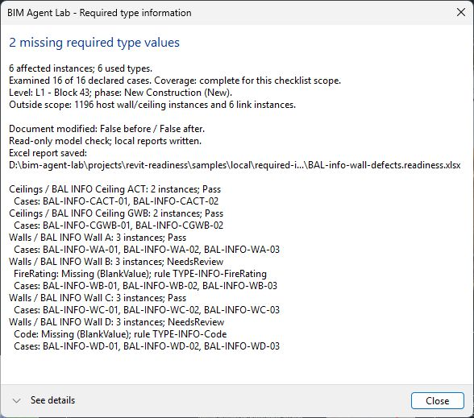
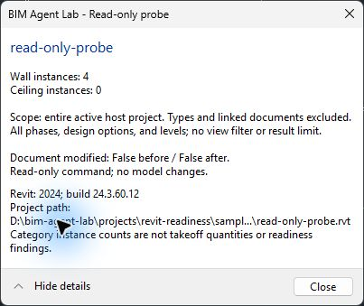

Build useful BIM tools with an AI agent
Session 1 · From BIM question to a researched plan
Where are you starting?
A show of hands sets the pace. The same example appears at every level.
Spectator
Ask the model questions in an AI chat app. Never see code.Scripter
Have an AI write, explain and fix quick Dynamo or pyRevit scripts.Agent-assisted builder
Use Claude Code or Codex in a repository to build a C# add-in.Systems builder
Build MCP tools, use independent review, write tests.Bring the BIM judgment.
You do not need to become a software developer to direct useful work. You do need to:
Explain the problem
Purpose, scope and the decision the answer supports.Define a trustworthy answer
Known cases and a result you can check without trusting the agent.Ask for evidence
What was observed, what was assumed, and what remains untested.Two hours, one example, a resource for afterward
| 00–10 | Frame the work and preview the example |
| 10–18 | Direct the agent with Git |
| 18–33 | Research existing work and resources |
| 33–43 | Define rules, scope and checkable cases |
| 43–55 | The first working step, plus quick scripting routes |
| 55–60 | Questions |
| 00–05 | Reconnect to the declared scope |
| 05–23 | How we built the plugin and its MCP connection |
| 23–35 | Verify, debug and learn from independent review |
| 35–50 | Use bim-agent-lab with your own agent |
| 50–60 | Your office use case, then questions |
This is a guided account of a real build, with selected demonstrations. The repository holds the detailed procedures for later.
The example we will follow
Can we tell whether required wall and ceiling type information is present?
What the finished check reports

The same answer from a desktop AI app
“The declared scope does not pass. Coverage is complete, but two required fields are missing, and they affect 6 of the 16 instances. Nothing was edited or exported, and the model was unmodified before and after the check.”
Session 2 shows how this connection was built and tested.
Three readiness questions; one built so far
Do we have the information we need?
Required type information for declared walls and ceilings.Which modeling conditions need review?
Wall tops, ceiling heights and similar physical conditions.Which quantities can we use?
Quantities separated by readiness findings.Inventory supports today's readiness answer. Measured quantities and physical-condition checks are future extensions.
Git belongs at the start
“One thing that participants need to know pretty much from the start is what it means to direct an agent in regards to working with git. I am going to ask you to clone the repos that you found, so that you can inspect the code for the researched resources.”
What you are asking the agent to do
| Git term | What you are asking for |
|---|---|
| Clone | Make a local copy so it can inspect an existing repository. |
| Branch | Name a line of work while preserving existing changes. |
| Diff | Show exactly what changed and explain its effect. |
| Commit | Record a selected, checked checkpoint in local history. |
| Remote / push | Identify the hosted destination; transfer commits to it. |
| Commit ID | Identify the exact version that was inspected or tested. |
Every step is a checkpoint you can point to
Real commits from the first day of this build, October 20, 2026
Make the work reviewable
Inspect the current repository, branch and changes. Preserve existing work. Use an appropriate branch, show the diff and relevant checks, then commit a coherent step. Keep credentials, research clones and working model files out of Git. Confirm the destination and visibility before sharing.
Ask it to look first.
“The first thing I want to impress on people is that research for work that has already been done by others and collecting the required resources are necessary.”
Research and collect
Find relevant official APIs, SDKs, libraries and existing GitHub projects. Check current versions, compatibility and licenses. Clone promising repositories into an ignored research folder and inspect the code behind the feature. Record source links and exact revisions. Distinguish a dependency we consume, code we adapt and a precedent we only learn from.
Our agent investigated official Revit resources, local software and samples, and seven source repositories, cloned at recorded commits.
Reading the source changed the plan
| Research finding | What it meant for our work |
|---|---|
| An existing query looked only at the current view and defaulted to a 100-element limit | A readiness report must say what it examined and whether anything was omitted |
| Revit API libraries and sample projects were already installed | Resource gathering could start with what was on the workstation |
| Candidate tools brought different packages, runtimes and license terms | A promising repository still needed compatibility and reuse assessment |
| Some repositories had source components that were not downloaded | Getting the main repository did not prove it was ready to build |
A partial inventory cannot silently represent a whole model. A project description alone did not reveal that limit; inspecting the code did.
Consume, adapt, or learn from
Ask the agent to say which, for every resource it brings in.
A dependency
ClosedXML for the Excel report. The official C# MCP SDK 2.2.0 for the agent connection.Code with attribution
One small input-cancellation helper from the C# SDK's source, with attribution and its license kept.A precedent
The TypeScript MCP SDK 1.26.0 and existing Revit bridges. Studied; no code copied or installed.License labels are evidence to review, not a blanket conclusion that everything may be redistributed.
Ask for versions at every boundary
| Boundary | Recorded in our build |
|---|---|
| Revit | Revit 2024, build 24.3.60.12 |
| SDK package | Official C# MCP SDK 2.2.0 (2.3.0 was newer at the time; the reviewed pin was kept) |
| MCP protocol | SDK test client: 2026-07-28 · Codex desktop: 2025-06-18 · Claude Desktop: 2025-11-25 |
| Desktop app | Each app's own version, recorded with every test |
Start with a useful question.
Your responsibility is the purpose, scope and standard of evidence.
| Include | For our example |
|---|---|
| Purpose | Find missing type information before a defined handoff. |
| Scope | The declared host walls and ceilings, level and phase; say whether links count. |
| Rules | Which fields are required for which types, and which exceptions are explicit. |
| Boundaries | Read a disposable sample. Do not change model values. |
| Output | Findings, affected instances, coverage and a clear scoped verdict. |
| Proof | Known passing, failing and incomplete cases; compare with Revit schedules. |
Our prompt for the first rule
“Ok, let's build the first readiness check for missing required wall and ceiling type information. Use a copy of a Revit sample project, verify the results independently, and record the process in bim-agent-lab.”
What makes this field required, where does that requirement come from, and which cases are valid exceptions? Show the proposed scope and expected answers before implementing the check.
A controlled sample with answers written first
Copies of Autodesk's Snowdon Towers sample, with 16 declared instances across six types: 12 walls and 4 ceilings.
- Every type requires Code (Type Mark).
- Walls A and B also require Fire Rating and Assembly Reference.
- Other exemptions are written into the checklist. The tool does not infer them from blank values.
| Complete |
| Wall defects |
| Ceiling negative |
| NC1: missing element |
| NC2: missing rule |
Make the division of work explicit
Ask for one Revit action at a time, with an exact file path. A similarly named model is not proof that the intended document is active.
Frame the task before building
I want to check [information] before [handoff or decision]. Read the project context first. Help me define the scope, rules, exceptions and expected output. Research existing approaches and required resources. Propose a small first step and explain how we can verify it independently. Identify what you need me to decide before writing code.
Build in checkable steps
| Step | How we engaged the agent |
|---|---|
| Prove the setup | Check prerequisites; build a minimal read-only Revit command. |
| Add one useful rule | Define required type information and controlled sample results. |
| Add Excel output | Review a library and its dependencies; compare with known results. |
| Connect an agent | Compare bridges; test actual desktop compatibility early. |
| Prepare recovery | Record installed files and backups before changes; test restoration. |
| Retain the lesson | Record participant decisions and the agent's reproducible procedure. |
Highlighted now; the rest in Session 2.
Start with the smallest proof
“first things..What are the minimal requirements for developing a plugin for Revit? This includes all software, libraries or other dependencies that will allow a new user to build a plugin with their agent.”
“Ok, let's check this machine against the prerequisites, install anything missing, and build a minimal read-only Revit command to prove the setup works. Record the steps and lessons in the teaching repo.”
The author didn't specify compiler flags, project files or installer scripts. The agent chose those.
Prove the setup with a known answer

| Case | Expected | Result |
|---|---|---|
| Empty project | 0 walls, 0 ceilings | Matched |
| Four-wall model | 4 walls, 0 ceilings | Matched twice |
| Read-only | No change | Modified flag false; file hashes matched |
Write the project memory first
## Where work belongs - Transferable lessons: docs/tutorials/ and docs/how-to/. - Application-specific implementation, tests, and samples: projects/<project>/. - Event-specific planning and presentations: workshops/<event>/. ## How to work 1. Inspect the repository, current branch, and existing changes before editing. Preserve unrelated work.
Agents start each session without memory. AGENTS.md (or CLAUDE.md) gives every session the same rules:
- Purpose, audience and scope
- Where each kind of work belongs
- How to work: research, verify, commit
- Commands and boundaries: what not to touch
Here, CLAUDE.md simply points to AGENTS.md, so Claude Code and Codex read the same instructions.
Quick route: Dynamo
The agent writes the script; you run it in the correct Revit environment.
- Open a disposable sample project. Manage › Visual Programming › Dynamo; create a new graph.
- Set run mode to Manual. Place a Python Script node, select CPython3 and open its editor.
- Paste the two lines. Connect OUT to a Watch node and click Run.
import sys OUT = ["Dynamo is working", sys.version]
Dynamo is included with Revit 2024, and its CPython3 engine has its own Python runtime. Next, ask for a read-only wall/ceiling inventory and compare its count with a native schedule.
Quick route: pyRevit
A separate, optional add-in that runs Python scripts as ribbon buttons.
- Ask the agent to inspect the installed pyRevit version and Python engine, then create a small extension with a read-only script.py command.
- Have it give the exact registration and reload steps for that version. Run the button on the same sample and verify the output.
For my installed [Dynamo or pyRevit] environment, create a read-only inventory of host basic walls and ceilings by type. State the scope and exclusions. Give me the exact run steps and an independent count check. Do not edit or save the model, and explain any extra dependency before adding it.
Dynamo and pyRevit use different host objects and may use different Python engines. Don't assume one script works in both.
Before you implement your own idea, ask the agent to…
- Read the project context and help define purpose, scope and proof.
- Research existing work; clone it and inspect the actual code.
- Record versions, licenses and what it will consume, adapt or only learn from.
- Write expected answers for known passing, failing and incomplete cases.
- Build the smallest read-only step and prove it against those answers.
- Show the diff and commit the checked step.
Questions? Session 2 at 11:00: the build, the evidence, and your next tool.